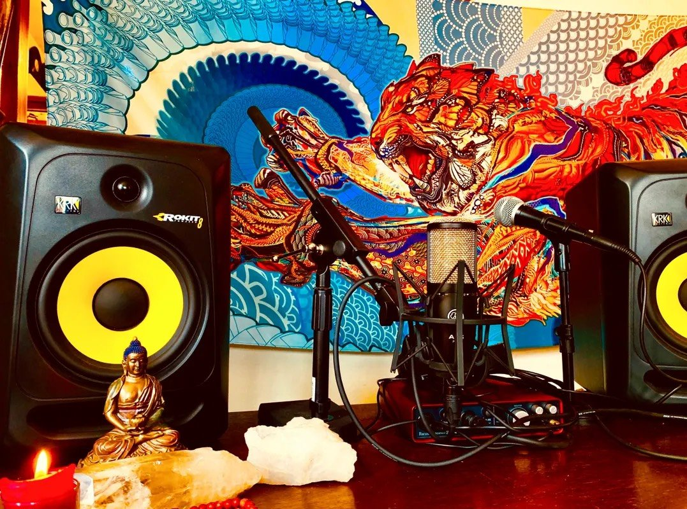
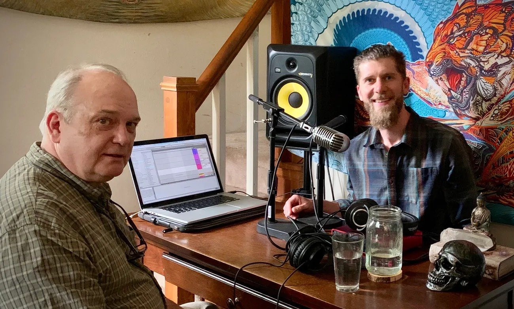
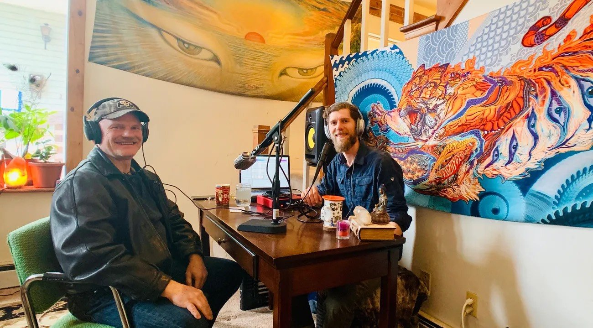
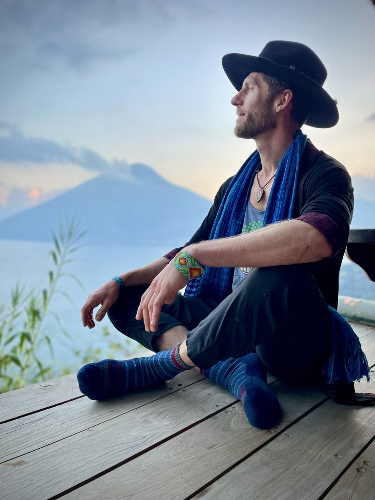
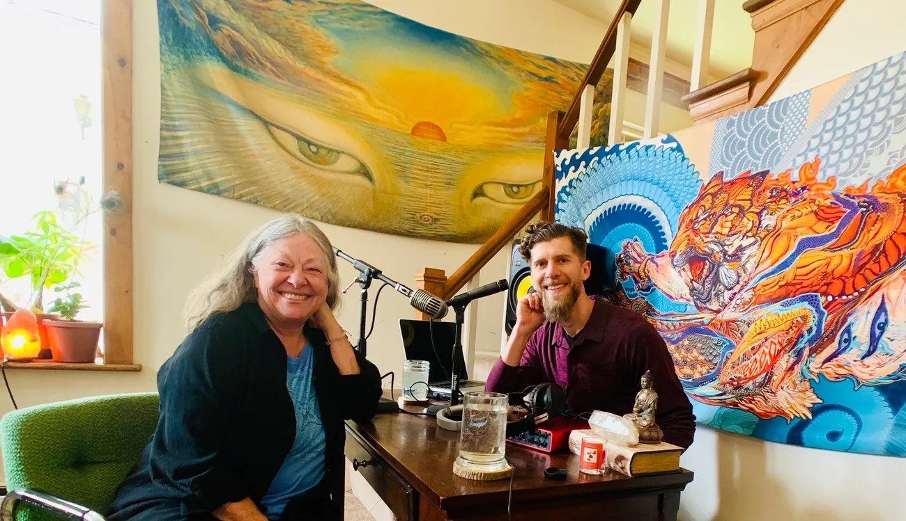
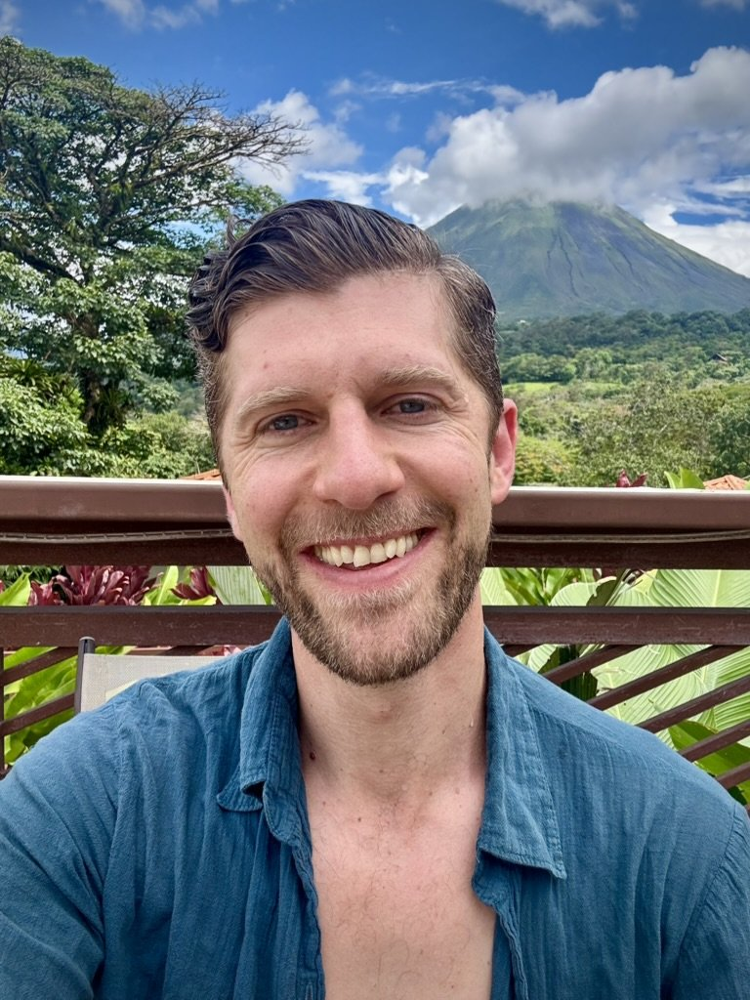
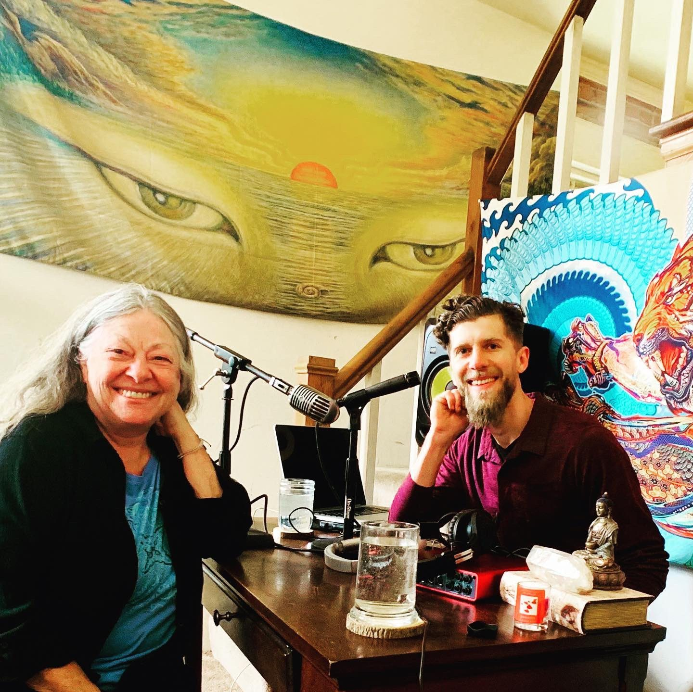

From the Show
Inside the conversations
A glimpse into the studio, the guests, and the journey of practice that shapes the questions explored on the podcast.

Sitting practice in the Colorado high country

The studio — where each conversation begins

Recording a long-form conversation

Above Namche Bazaar — Nepal, 2007

In dialogue with a guest

Lake Atitlán, Guatemala

Each guest brings their lineage

Arenal Volcano, Costa Rica

Behind the mic